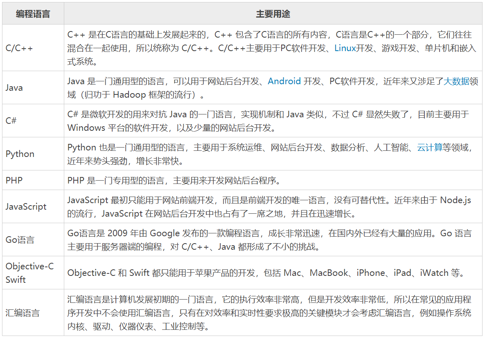
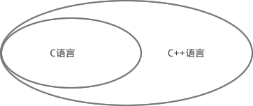

【本文结构】
- 1、学编程难吗，多久能入门？
- 2、什么是编程语言
- 3、C语言究竟是一门怎样的语言
- 编程语言的发展阶段
- C语言是计算机产业的核心语言
- C语言是菜鸟和大神的分水岭（内存 --> 进程 --> 线程）
- C语言和 C++ 到底有什么关系
- 学了C语言到底能做什么，能从事什么工作？
- 4、二进制、八进制和十六进制
- 不同进制之间的转换
- 5、数据在内存中的存储（二进制形式存储）
- 6、载入内存，让程序运行起来
- 学编程难吗
- 编程是一门技术，我也不知道它难不难，我只知道，只要你想学，肯定能学会。每个人的逻辑思维能力不同，兴趣点不同，总有一部分人觉得容易，一部分人觉得吃力。
- 但是，隔行如隔山，学好编程也不是一朝一夕的事，想“吃快餐”的读者可以退出编程界了，浮躁的人搞不了技术。
- 不管是技术还是非技术，要想有所造诣，都必须潜心钻研，没有几年功夫不会鹤立鸡群。
- 多久能学会编程
- 但是有一点可以肯定，几个月从小白成长为大神是绝对不可能的。要想出类拔萃，没有几年功夫是不行的。学习编程不是看几本书就能搞定的，需要你不断的练习，编写代码，积累零散的知识点，代码量跟你的编程水平直接相关，没有几万行代码，没有拿得出手的作品，怎能称得上“大神”。
- 每个人程序员都是这样过来的，开始都是一头雾水，连输出九九乘法表都很吃力，只有通过不断练习才能熟悉，这是一个强化思维方式的过程。
- 知识点可以在短时间内了解，但是思维方式和编程经验需要不断实践才能强化，这就是为什么很多初学者已经了解了C语言的基本概念，但是仍然不会编写代码的原因。
- 浸泡理论
- 这是我自己独创的一个理论，意思是说：一个人要想在某一方面有所成就，就必须有半年以上的时间，每天花 10 个小时“浸泡”在这件事情上，最终一定会有所收获。
- 很多领域都是「一年打基础，两年见成效，三年有突破」，但是很多人在不到一年的时间里就放弃了，总觉得这个行业太难，不太适合自己。
- 轻言放弃是很可怕的，你要知道，第一次放弃只是浪费了时间，第二次放弃会打击你的信心，第三次放弃会摧毁你的意志，你就再也没有尝试的勇气了，“蹉跎人生”就是这么来的。
- 你也不要羡慕那些富二代官二代，你以为人生就是一次百米短跑，你赢了就是赢了，其实人生是一场接力赛，你的父辈祖辈都得赢，那些富二代官二代从好几十年以前就开始积累了。
- 所以，沉下一颗心来，从现在开始积累吧，有执念的人最可怕。
- 初中毕业能学会编程吗？
- 编程是知识密集型的行业，需要很强的学习能力。初中就毕业了，肯定学习不好。大家的智商都差不多，成绩不好一般都是学习能力差。什么是学习能力呢？这包括专注能力、理解能力、自律能力等。
- 专注能力： 有很多人不能专注于一件事情，容易走神，人虽然在，心已经飞了，根本钻研不进去。
- 理解能力： 也可以说是逻辑思维能力。
- 自律能力： 学习是一件枯燥的事情，有些人能坚持下来，有些人就熬不住。
- 程序员需要很强的自学精神，即使没有老师，没有培训班，你也应该一样优秀。
- 不仅仅是程序员，任何职位都要摆正心态，当你的待遇比别人低时，大部分情况下是能力不及别人。
- 学习的方法论：
- 大家在学习和实践过程中遇到问题首先要自己解决，解决不了就借助搜索引擎，而不是先去问别人。这足以解决大部分问题了。
- 不过我相信你肯定还有小部分问题拿捏不准，需要有人给你拍板，这个时候老师或学长学姐就会发挥作用了，他们凭借自己的经验告诉你最佳方案或思路，让你恍然大悟，你就真的懂了。
- 注意：师傅的指导是非常重要的，你不要自己闷头学习，会走很多弯路，而且会有不少“野路子”，不伦不类，水分很多。如果你周围没有学习环境，又不想花钱去培训班，一定要找一位师傅带你！
- 编程语言（Programming Language）
- 编程语言是用来控制计算机的一系列指令（Instruction），它有固定的格式和词汇（不同编程语言的格式和词汇不一样），必须遵守，否则就会出错，达不到我们的目的。

- 将编程语言中具有特定含义的词汇、语句，按照特定的格式组织在一起（ 语法（Syntax）），就构成了源代码（Source Code），也称源码或代码（Code）。
- 编写源代码的过程就叫做编程（Program）。从事编程工作的人叫程序员（Programmer）。程序员也很幽默，喜欢自嘲，经常说自己的工作辛苦，地位低，像农民一样，所以称自己是”码农“，就是写代码的农民。也有人自嘲称是”程序猿“。
- 编程语言的发展大概经历了以下几个阶段
- 汇编语言 --> 面向过程编程 --> 面向对象编程
- 汇编语言是编程语言的拓荒年代，它非常底层，直接和计算机硬件打交道，开发效率低，学习成本高；
- C语言是面向过程的编程语言，已经脱离了计算机硬件，可以设计中等规模的程序了；
- Java、C++、Python、C#、PHP 等是面向对象的编程语言，它们在面向过程的基础上又增加了很多概念。
- C语言是计算机产业的核心语言
- 也许是机缘巧合，C语言出现后不久，计算机产业开始爆发，计算机硬件越来越小型化，越来越便宜，逐渐进入政府机构，进入普通家庭，C语言成了编程的主力军，获得了前所未有的成功，操作系统、常用软件、硬件驱动、底层组件、核心算法、数据库、小游戏等都使用C语言开发。
- 雷军说过，站在风口上，猪都能飞起来；C语言就是那头猪，不管它好不好，反正它飞起来了。
- C语言被誉为“上帝语言”，它不但奠定了软件产业的基础，还创造了很多其它语言，例如：
- PHP、Python 等都是用C语言开发出来的，虽然平时做项目的时候看不到C语言的影子，但是如果想深入学习 PHP 和 Python，那就要有C语言基础了。
- C++ 和 Objective-C 干脆在C语言的基础上直接进行扩展，增加一些新功能后变成了新的语言，所以学习 C++ 和 Objective-C 之前也要先学习C语言。
- 「内存 + 进程 + 线程」这几个最基本的计算机概念是菜鸟和大神的分水岭，也只有学习C语言才能透彻地理解它们。
- 一名合格的程序员必须了解内存，学习C语言是了解内存布局的最简单、最直接、最有效的途径，C语言简直是为内存而生的，它比任何一门编程语言都贴近内存。
- 所有的程序都在拼尽全力节省内存，都在不遗余力提高内存使用效率，计算机的整个发展过程都在围绕内存打转，不断地优化内存布局，以保证可以同时运行多个程序。
- 不了解内存，就学不会进程和线程，就没有资格玩中大型项目，没有资格开发底层组件，没有资格架构一个系统，命中注定你就是一个菜鸟，成不了什么气候。
- 从C语言到内存，从内存到进程和线程，环环相扣：不学C语言就吃不透内存，不学内存就吃不透进程和线程。

- 早期并没有”C++“这个名字，而是叫做”带类的C“。”带类的C“是作为C语言的一个扩展和补充出现的，目的是提高开发效率，如果你有Java Web开发经验，那么你可以将它们的关系与 Java 和 JSP 的关系类比。
- 这个时期的C++非常粗糙，仅支持简单的面向对象编程，也没有自己的编译器，而是通过一个预处理程序（名字叫 cfront），先将C++代码”翻译“为C语言代码，再通过C语言编译器合成最终的程序。
- 随着C++的流行，它的语法也越来越强大，已经能够很完善的支持面向对象编程和泛型编程。但是一直也没有诞生出新的C++编译器，而是对原来C编译器不断扩展，让它支持C++的新特性，所以我们通常称为C/C++编译器，因为它同时支持C和C++，例如 Windows 下的微软编译器(cl.exe)，Linux 下的 GCC 编译器。
- 也就是说，你写的C、C++代码都会通过一个编译器来编译，很难说C++是一门独立的语言，还是对C的扩展。
- 从“学院派”的角度来说，C++支持面向过程编程、面向对象编程和泛型编程，而C语言仅支持面向过程编程。就面向过程编程而言，C++和C几乎是一样的，所以学习了C语言，也就学习了C++的一半，不需要从头再来。
- 十进制（Decimalism /'desiməlizəm/）
- 用 0~9 共十个数字来表示数值，基数为10。
- 加法：逢十进一（满十进一），
- 减法：借一当十。
- 十进制是在人类社会发展过程中自然形成的，它符合人们的思维习惯，例如人类有十根手指，也有十根脚趾。
- 二进制（Binary）
- 用0、1两个数字来表示数值，基数为2。
- 加法：逢二进一（满二进一），
- 减法：借一当二。
- 在计算机内部，数据都是以二进制的形式存储的，二进制是学习编程必须掌握的基础。
- 八进制（octonary 英 /'ɒktə(ʊ)n(ə)rɪ/）
- 用0~7 共8个数字来表示数值，基数为8。
- 加法：逢八进一（满八进一），
- 减法：借一当八。
- 十六进制（hexadecimal 英 /ˌheksəˈdesɪml/）
- 除了0~9这十个数字，还用A来表示10，B表示11，C表示12，D表示13，E表示14，F表示15，因此有 0~F 共16个数字，基数为16。
- 加法：逢十六进一（满二进一），
- 减法：借一当十六
- 注意，十六进制中的字母不区分大小写，ABCDEF 也可以写作 abcdef。
- 将二进制、八进制、十六进制转换为十进制
- 二进制、八进制和十六进制向十进制转换都非常容易，就是“按权相加”。所谓“权”，也即“位权”。
- 假设当前数字是 N 进制，那么：
- 对于整数部分，从右往左看，第 i 位的位权等于Ni-1
- 对于小数部分，恰好相反，要从左往右看，第 j 位的位权为N-j。
- i、j都从1开始计数。
- 将十进制转换为二进制、八进制、十六进制
- 将十进制转换为其它进制时比较复杂，整数部分和小数部分的算法不一样，下面我们分别讲解。
- 整数部分
- 十进制整数转换为 N 进制整数采用“除 N 取余，逆序排列”法。具体做法是：
- 将 N 作为除数，用十进制整数除以 N，可以得到一个商和余数；
- 保留余数，用商继续除以 N，又得到一个新的商和余数；（低位）
- 仍然保留余数，用商继续除以 N，还会得到一个新的商和余数；（高位）
- ……
- 如此反复进行，每次都保留余数，用商接着除以 N，直到商为 0 时为止。
- 把先得到的余数作为 N 进制数的低位数字，后得到的余数作为 N 进制数的高位数字，依次排列起来，就得到了 N 进制数字。
- 下图演示了将十进制数字 42 转换成二进制的过程：（ 从图中得知，十进制数字 42 转换成二进制的结果为 101010。）

- 小数部分
- 十进制小数转换成 N 进制小数采用“乘 N 取整，顺序排列”法。具体做法是：
- 用 N 乘以十进制小数，可以得到一个积，这个积包含了整数部分和小数部分；
- 将积的整数部分取出，再用 N 乘以余下的小数部分，又得到一个新的积；(高位)
- 再将积的整数部分取出，继续用 N 乘以余下的小数部分；（低位）
- ……
- 如此反复进行，每次都取出整数部分，用 N 接着乘以小数部分，直到积中的小数部分为 0，或者达到所要求的精度为止。（高位）
- 把取出的整数部分按顺序排列起来，先取出的整数作为 N 进制小数的高位数字，后取出的整数作为低位数字，这样就得到了 N 进制小数。
- 下图演示了将十进制小数 0.6875 转换成二进制小数的过程：（ 从图中得知，十进制小数 0.6875 转换成二进制小数的结果为 0.1011。）

- 下表列出了前 17 个十进制整数与二进制、八进制、十六进制的对应关系：

- 注意，十进制小数转换成其他进制小数时，结果有可能是一个无限位的小数。请看下面的例子：
- 十进制 0.51 对应的二进制为 0.100000101000111101011100001010001111010111...，是一个循环小数；
- 十进制 0.72 对应的二进制为 0.1011100001010001111010111000010100011110...，是一个循环小数；
- 十进制 0.625 对应的二进制为 0.101，是一个有限小数。
- 二进制、八进制和十六进制的转换
- 二进制整数和八进制整数之间的转换
- 二进制整数转换为八进制整数时，每三位二进制数字转换为一位八进制数字，运算的顺序是从低位向高位依次进行，高位不足三位用零补齐。
- 八进制整数转换为二进制整数时，思路是相反的，每一位八进制数字转换为三位二进制数字，运算的顺序也是从低位向高位依次进行。
二进制整数和十六进制整数之间的转换
- 二进制整数转换为十六进制整数时，每四位二进制数字转换为一位十六进制数字，运算的顺序是从低位向高位依次进行，高位不足四位用零补齐。
- 十六进制整数转换为二进制整数时，思路是相反的，每一位十六进制数字转换为四位二进制数字，运算的顺序也是从低位向高位依次进行。
- 在C语言编程中，二进制、八进制、十六进制之间几乎不会涉及小数的转换，所以这里我们只讲整数的转换，大家学以致用足以。另外，八进制和十六进制之间也极少直接转换，这里我们也不再讲解了。
- 更多关于二进制、八进制和十六进制（C语言下）的介绍，请看本笔记本（“C语言中文网”）下的笔记“3_变量和数据类型（1）”中的：
- C语言中的二进制数、八进制数、十六进制数
- C语言中的正负数及其输出
- 任何形式的数据在计算机中都是以二进制形式来表示
- 计算机要处理的信息是多种多样的，如数字、文字、符号、图形、音频、视频等，这些信息在人们的眼里是不同的。但对于计算机来说，它们在内存中都是一样的，都是以二进制的形式来表示。
- 所以，计算机使用二进制，而不是我们熟悉的十进制，写入内存中的数据，都会被转换成0和1的组合。
- 内存条是一个非常精密的部件，包含了上亿个电子元器件，它们是纳米级别的。这些元器件，实际上就是电路；电路的电压会变化，要么是 0V，要么是 5V，只有这两种电压。5V 是通电，用1来表示，0V 是断电，用0来表示。所以，一个元器件有2种状态，0 或者 1。
- 我们通过电路来控制这些元器件的通断电，会得到很多0、1的组合。例如，8个元器件有 28=256 种不同的组合，16个元器件有 216=65536 种不同的组合。虽然一个元器件只能表示2个数值，但是多个结合起来就可以表示很多数值了。
- 一般情况下我们不一个一个的使用元器件，而是将8个元器件看做一个单位，即使表示很小的数，例如 1，也需要8个，也就是 00000001。
- 1个元器件称为1比特（Bit）或1位，8个元器件称为1字节（Byte），那么16个元器件就是2Byte，32个就是4Byte，以此类推：
- 8×1024个元器件就是1024Byte，简写为1KB；
- 8×1024×1024个元器件就是1024KB，简写为1MB；
- 8×1024×1024×1024个元器件就是1024MB，简写为1GB。
- 内存计量单位的换算
- 1Byte = 8 Bit
- 1KB = 1024Byte = 210Byte
- 1MB = 1024KB = 220Byte
- 1GB = 1024MB = 230Byte
- 1TB = 1024GB = 240Byte
- 1PB = 1024TB = 250Byte
- 1EB = 1024PB = 260Byte
- 以QQ软件为例，我们安装的QQ软件是保存在硬盘中的。 双击QQ图标，操作系统就会知道你要运行这个软件，它会在硬盘中找到你安装的QQ软件，将数据（安装的软件本质上就是很多数据的集合）复制到内存。对！就是复制到内存！QQ不是在硬盘中运行的，而是在内存中运行的。
- 为什么呢？因为内存的读写速度比硬盘快很多。
- 对于读写速度，内存 > 固态硬盘 > 机械硬盘
- 机械硬盘是靠电机带动盘片转动来读写数据的，而内存条通过电路来读写数据，电机的转速肯定没有电的传输速度（几乎是光速）快。
- 固态硬盘也是通过电路来读写数据，但是因为与内存的控制方式不一样，速度也不及内存。
- 所以，不管是运行QQ还是编辑Word文档，都是先将硬盘上的数据复制到内存，才能让CPU来处理，这个过程就叫作载入内存（Load into Memory）。完成这个过程需要一个特殊的程序（软件），这个程序就叫做加载器（Loader）。
- CPU直接与内存打交道，它会读取内存中的数据进行处理，并将结果保存到内存。如果需要保存到硬盘，才会将内存中的数据复制到硬盘。
- 例如，打开Word文档，输入一些文字，虽然我们看到的不一样了，但是硬盘中的文档没有改变，新增的文字暂时保存到了内存，Ctrl+S才会保存到硬盘。因为内存断电后会丢失数据，所以如果你编辑完Word文档忘记保存就关机了，那么你将永远无法找回这些内容。
- 总结：CPU直接从内存中读取数据，处理完成后将结果再写入内存。

- 虚拟内存（Virtual Memory）
- 如果我们运行的程序较多，占用的空间就会超过内存（内存条）容量。
- 例如计算机的内存容量为2G，却运行着10个程序，这10个程序共占用3G的空间，也就意味着需要从硬盘复制 3G 的数据到内存，这显然是不可能的。
- 操作系统（Operating System，简称 OS）为我们解决了这个问题：当程序运行需要的空间大于内存容量时，会将内存中暂时不用的数据再写回硬盘；需要这些数据时再从硬盘中读取，并将另外一部分不用的数据写入硬盘。这样，硬盘中就会有一部分空间用来存放内存中暂时不用的数据。这一部分空间就叫做虚拟内存（Virtual Memory）。
- 3G - 2G = 1G，上面的情况需要在硬盘上分配 1G 的虚拟内存。
- 硬盘的读写速度比内存慢很多，反复交换数据会消耗很多时间，所以如果你的内存太小，会严重影响计算机的运行速度，甚至会出现”卡死“现象，即使CPU强劲，也不会有大的改观。
- 如果经济条件允许，建议将内存升级为 4G，在 win7、win8、win10 下运行软件就会比较流畅了。